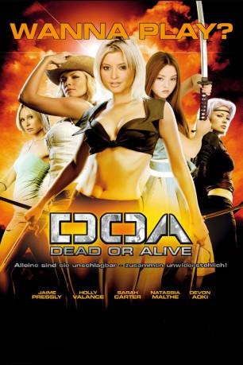

#3255 D.O.A. - Dead or Alive
Alternativ: DOA: Dead or Alive
 
 IMDB-Wertung: 4.8 / 10
IMDB-Wertung: 4.8 / 10  Metascore: 38
Metascore: 38 
Tina (Jaime Pressly), Christie (Holly Valance), Prinzessin Kasumi (Devon Aoki) und Helena (Sarah Carter) sind nicht nur sexy, sie sind auch Meisterinnen asiatischer Kampfkünste und setzen sie individuell ein. Eines Tages erhalten alle vier eine Einladung, auf einer abgelegenen Insel an dem berüchtigten "Dead-or-Alive"-Wettbewerb teilzunehmen, bei dem dem Sieger 10 Millionen Dollar als Prämie winken.Doch hinter dem Wettbewerb steckt mehr und die Mädchen müssen herausfinden, von wem sie die Einladungen bekommen haben und was dieser jemand wirklich damit bezweckt...
Jahr: 2006
Dauer: 86 Minuten
FSK: 12
Land: USA Studio: Dimension FilmsTonspuren: DTS - ,
Untertitel:
Auflösung: 1080p (1920x816) Größe: 8581 MB
Genre: Action, Abenteuer
Regisseur:  Corey Yuen
Corey Yuen
Drehbuch: J.F. Lawton, Adam Gross, Seth Gross, J.F. Lawton
Soundtrack: Junkie XL
Darsteller:
- Jaime Pressly als Tina Armstrong
- Devon Aoki als Kasumi
- Holly Valance als Christie Allen
- Sarah Carter als Helena Douglas
 Natassia Malthe als Ayane
Natassia Malthe als Ayane- Kane Kosugi als Ryu Hayabusa
 Matthew Marsden als Max
Matthew Marsden als Max Eric Roberts als Donovan
Eric Roberts als Donovan Steve Howey als Weatherby
Steve Howey als Weatherby Brian White als Zack
Brian White als Zack Kevin Nash als Bass Armstrong
Kevin Nash als Bass Armstrong Collin Chou als Hayate
Collin Chou als Hayate- Derek Boyer als Bayman
 Silvio Simac als Leon
Silvio Simac als Leon- Chad McCord als Chief Detective
- Martin Crewes als Butler
- Robin Shou als Pirate Leader
- Fang Liu als Gen Fu
- Ying Wang als Lei Fang
- Theodore Thomas als Gentleman
- Li Shi als Bellboy
- Anna Bolt als Nurse Jones
- Hung Lin als Hitomi
- Song Lin als Brad Wong
Datei: X:\2006(A-F)\D.O.A. - Dead or Alive (2006, FSK12, 1920x816).mkv seit 23.02.2016
Festplatte: HD 2005(G-Z)-2006(A-Z)
 Es gibt insgesamt 56 Filme in der Gruppe '2006(A-F)'
Es gibt insgesamt 56 Filme in der Gruppe '2006(A-F)'